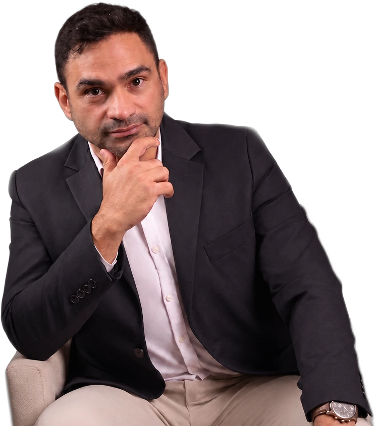

Leitura técnica do cenário
Levantamento das características da edificação e da situação existente para identificar o fluxo aplicável e os pontos que precisam de atenção.
A Sá Moraes avalia a edificação, orienta a documentação e acompanha o processo junto ao Corpo de Bombeiros.
Fale diretamente com Victor Moraes pelo WhatsApp ou adiante o atendimento pelo nosso chatbot., para visualizar quais documentos você precisa para emitir o AVCB*.
*Os documentos gerados no chatbot são uma simulação. Para confirmar quais documentos são necessários, sempre valide com um técnico da Sá Moraes Engenharia.

Victor MoraesEngenharia de segurança contra incêndio
O AVCB Pernambuco envolve a análise da edificação, o enquadramento do processo, a organização dos documentos e a verificação das medidas de segurança aplicáveis. A Sá Moraes conduz essas etapas com uma visão técnica integrada.
A assessoria organiza o processo de regularização de segurança contra incêndio e ajuda o responsável pela edificação a compreender o que precisa ser levantado, corrigido, documentado e acompanhado perante o CBMPE.
Levantamento das características da edificação e da situação existente para identificar o fluxo aplicável e os pontos que precisam de atenção.
Estruturação das informações, dos documentos e das responsabilidades envolvidas, evitando que decisões importantes sejam tomadas sem base técnica.
Orientação durante as etapas necessárias, incluindo adequações, protocolo e atendimento das solicitações pertinentes ao processo.
O caminho exato depende do imóvel. Em linhas gerais, a condução técnica parte do diagnóstico e avança até o acompanhamento da regularização aplicável.
Coleta de dados sobre imóvel, atividade, ocupação, área, altura, sistemas existentes e documentos disponíveis.
Identificação do procedimento e das exigências que podem se aplicar às características encontradas.
Organização ou desenvolvimento dos elementos técnicos necessários ao andamento do processo.
Orientação das medidas que precisam ser instaladas, corrigidas, comprovadas ou mantidas.
Acompanhamento das etapas administrativas e das solicitações relacionadas ao processo aplicável.
Orientação sobre emissão, validade, manutenção das condições e planejamento da futura renovação.
A lista não é igual para todos. Antes de solicitar qualquer conjunto fechado, é preciso entender a edificação e o tipo de processo. Estes são grupos de informações frequentemente analisados.
Outros elementos podem ser solicitados conforme o enquadramento, as condições encontradas e as orientações do órgão competente.
Empreendimentos de diferentes portes e ocupações podem passar por regularização, renovação ou reavaliação após mudanças. O enquadramento deve ser confirmado individualmente.
Uma estimativa responsável considera a situação real da edificação. Prometer um valor ou prazo único antes do diagnóstico pode ignorar etapas importantes do processo.
O trabalho pode variar de uma orientação documental a um conjunto mais amplo de projeto, adequações e acompanhamento.
A validade precisa ser acompanhada e as condições de segurança mantidas. Reformas, ampliações, mudança de atividade ou alterações relevantes podem exigir nova avaliação antes mesmo da renovação periódica.
Respostas iniciais para entender o serviço. Elas não substituem o enquadramento técnico nem a consulta às orientações vigentes do Corpo de Bombeiros Militar de Pernambuco.
AVCB é a sigla pela qual muitas pessoas procuram o documento emitido pelo Corpo de Bombeiros após o atendimento das exigências aplicáveis de segurança contra incêndio. Em Pernambuco, o enquadramento e o fluxo devem ser confirmados no CBMPE para cada edificação.
Não. O procedimento e as exigências podem variar conforme ocupação, área, altura, características da atividade, riscos existentes e situação documental do imóvel.
Os documentos variam conforme o caso. Podem envolver dados da empresa e do imóvel, plantas ou projeto, registros de responsabilidade técnica, laudos, certificados e comprovantes dos sistemas instalados.
O valor e o prazo dependem das condições da edificação, das adequações necessárias, da documentação disponível e das etapas aplicáveis no CBMPE. Uma avaliação inicial permite estimar o escopo com mais segurança.
Sim. O chatbot organiza informações iniciais e ajuda a preparar o atendimento. A definição técnica final depende da análise da edificação e dos documentos por um profissional.
O CBMPE mantém serviços oficiais de consulta de processos e de validação de autenticidade. Os links oficiais estão reunidos logo abaixo desta área.
Conteúdo informativo. As exigências e os procedimentos vigentes devem ser confirmados nos canais oficiais e conforme o enquadramento de cada edificação.
Comece por onde for mais conveniente
Fale diretamente pelo WhatsApp ou use o chatbot para preparar o atendimento inicial. Os dois caminhos levam você à próxima etapa com a Sá Moraes Engenharia.
Acompanhe ocorrências, fiscalizações, investimentos e casos de regularização que ajudam a compreender a segurança contra incêndio no estado.
O Ministério Público de Pernambuco instaurou um inquérito civil para apurar a situação de 47 unidades escolares estaduais no município de Petrolina, das quais 12 foram citadas nominalmente por operarem sem o Atestado de Vistoria do Corpo de Bombeiros (AVCB) em dia. A Secretaria de Educação do Estado tem prazo de 30 dias para apresentar um plano de regularização com cronograma de adequações para as unidades vistoriadas. O caso reforça uma preocupação recorrente em prédios públicos: a falta de atualização periódica do AVCB, mesmo em locais que recebem centenas de crianças e adolescentes todos os dias.
Ver matéria originalO Estádio do Arruda, casa do Santa Cruz e um dos maiores estádios particulares do país, completou um ano inteiro com os portões fechados ao público. Segundo o Corpo de Bombeiros de Pernambuco, a emissão do Atestado de Vistoria do Corpo de Bombeiros (AVCB) depende da aprovação do projeto técnico e do cumprimento integral das exigências de segurança contra incêndio e pânico, algo que o clube não conseguiu concluir mesmo após reformas em áreas sociais, assentos e arquibancadas. O caso mostra que porte e tradição não substituem a documentação: mesmo um estádio histórico fica impedido de funcionar sem o AVCB regularizado.
Ver matéria originalO Ministério Público de Pernambuco apurou irregularidades estruturais e de segurança no Campus Petrolina da Universidade de Pernambuco (UPE). O Bloco A da unidade foi interditado em maio de 2025 por risco de desabamento do teto, e a investigação revelou que o campus segue sem o Atestado de Vistoria do Corpo de Bombeiros (AVCB), com o processo de regularização pendente desde outubro de 2021. O Corpo de Bombeiros confirmou a existência de um projeto preventivo aprovado, mas com execução incompleta. O caso reforça como a falta de regularização pode se arrastar por anos, mesmo em instituições públicas de grande porte.
Ver matéria originalDepois de uma sequência de incêndios de grandes proporções na cidade de Caruaru, o Governo de Pernambuco anunciou um pacote de R$ 280 milhões em investimentos para reforçar a estrutura e a capacidade operacional do Corpo de Bombeiros Militar no estado. A notícia ampliou o debate público sobre prevenção e fiscalização de incêndios e reforça o quanto o tema tem ganhado prioridade nas políticas públicas de segurança em Pernambuco, incluindo o reforço da fiscalização que resulta na emissão do Atestado de Vistoria do Corpo de Bombeiros (AVCB) em todo o estado.
Ver matéria originalUm incêndio de grandes proporções atingiu uma loja de eletrodomésticos no Shopping Recife, na Zona Sul da cidade, na madrugada de 13 de março de 2026. O Corpo de Bombeiros mobilizou dez viaturas para o combate às chamas e informou não haver previsão de reabertura devido à presença de fumaça tóxica na área. Dias depois, o lojista do espaço vizinho ao ponto de origem do incêndio alegou, por meio de seu advogado, ter recebido o local com fiação elétrica exposta e danos no teto e no piso antes do início do fogo. A causa segue sob investigação técnica, com resultado esperado em até 30 dias. Casos como esse reforçam por que o Atestado de Vistoria do Corpo de Bombeiros (AVCB) exige verificação constante das instalações elétricas e dos sistemas de prevenção, não apenas na inauguração do espaço.
Ver matéria originalUma ação conjunta batizada de Operação Bar Seguro resultou na interdição de um estabelecimento no município de Lagoa Grande, no Sertão de Pernambuco, por funcionar sem as licenças obrigatórias, incluindo o Atestado de Vistoria do Corpo de Bombeiros (AVCB). A fiscalização, que envolveu o Ministério Público de Pernambuco, também verificou outras irregularidades administrativas no local. O caso mostra como a falta de regularização de segurança contra incêndio frequentemente aparece ao lado de outras pendências em fiscalizações de rotina.
Ver matéria originalUm sargento do Corpo de Bombeiros de Pernambuco tornou-se alvo de investigação do Ministério Público por suspeita de usar sua função pública para obter vantagens indevidas na emissão de Atestados de Vistoria do Corpo de Bombeiros (AVCB). A apuração busca esclarecer possível enriquecimento ilícito por meio da concessão irregular de documentos essenciais para o funcionamento de estabelecimentos comerciais, o chamado “atestado quente”. O caso expõe um risco pouco discutido: contratar assessoria sem transparência técnica pode significar, na prática, pagar por um documento sem validade real de segurança.
Ver matéria originalApós a renovação do Atestado de Vistoria do Corpo de Bombeiros (AVCB), o Sport Club do Recife teve a capacidade autorizada de seu estádio, a Ilha do Retiro, ampliada para cerca de 27 mil torcedores. A matéria mostra como melhorias nas saídas de emergência e o cumprimento das exigências técnicas de segurança contra incêndio impactam diretamente a liberação de público em grandes eventos, um raro exemplo, nesta lista, de regularização bem-sucedida e de seus benefícios práticos.
Ver matéria originalDurante a chamada Operação Educação, o Tribunal de Contas do Estado de Pernambuco (TCE-PE) fiscalizou 91 escolas em 16 municípios do interior e encontrou algum tipo de irregularidade em absolutamente todas elas. O dado mais expressivo: 98,9% das unidades não possuíam o Atestado de Vistoria do Corpo de Bombeiros (AVCB) regular. Outros achados incluíram falta de câmeras de segurança em 94,5% das escolas e problemas estruturais em banheiros em 64% dos casos. Segundo um dos auditores, “vimos estudantes frequentando escolas em condições tão precárias quanto antes”, mostrando que o problema persiste mesmo após fiscalizações anteriores.
Ver matéria originalUma fiscalização conjunta do Procon-PE com apoio da Polícia Militar e do Corpo de Bombeiros percorreu o Recife Antigo e o Centro Histórico de Olinda para verificar o cumprimento de normas de segurança e sanitárias. Dois restaurantes na orla de Olinda foram interditados pelo Corpo de Bombeiros por estarem sem o Auto de Vistoria do Corpo de Bombeiros (AVCB), documento descrito pelo próprio órgão como a licença que comprova que o estabelecimento está seguro para funcionar. Os demais estabelecimentos vistoriados estavam em conformidade.
Pesquise dúvidas e consulte informações sobre o processo, regiões atendidas e assuntos técnicos.
Encontre informações sobre documentos, etapas, serviços do CBMPE, atuação regional e assuntos técnicos relacionados à segurança contra incêndio.
Respostas para quem precisa entender por onde começar, quais informações reunir e como a regularização é conduzida.
O caminho começa pela análise da edificação e pelo enquadramento do processo. Depois são organizados os documentos, as medidas de segurança e as etapas administrativas aplicáveis ao caso.
O diagnóstico reúne a leitura da situação existente, os pontos que precisam de atenção e a orientação inicial para estruturar o processo com base técnica.
O plano organiza prioridades, responsabilidades, documentos e adequações para que as decisões sejam tomadas em uma sequência coerente.
A relação varia conforme o imóvel e o processo. Pode envolver dados da empresa, informações da edificação, plantas, projeto, registros de responsabilidade técnica, memoriais, laudos e comprovantes dos sistemas.
Área, altura, ocupação, atividade, riscos e sistemas existentes influenciam o enquadramento e os documentos que precisam ser avaliados.
A estimativa depende da documentação disponível, das condições encontradas, das adequações e das etapas aplicáveis. Ela deve ser construída depois da avaliação inicial.
As medidas que precisam ser instaladas, corrigidas, comprovadas ou mantidas devem ser definidas conforme a análise técnica da edificação.
A pré-vistoria confere as condições da edificação e ajuda a identificar pendências antes da etapa oficial aplicável ao processo.
O diagnóstico pode servir para compreender o cenário antes da decisão sobre a continuidade e o escopo dos serviços seguintes.
A entrega de elementos técnicos é diferente do acompanhamento das adequações, do protocolo, das solicitações e da conclusão do processo.
Informações para compreender os serviços oficiais, as etapas administrativas e a consulta do processo.
O protocolo deve seguir o procedimento aplicável ao caso. Dados, documentos e comprovantes precisam estar organizados antes da submissão no serviço oficial.
Valores, documentos de arrecadação e orientações de pagamento devem ser confirmados diretamente nos canais oficiais vigentes do CBMPE.
A emissão ocorre após o atendimento das etapas e exigências aplicáveis ao processo. O enquadramento deve ser confirmado para cada edificação.
A nomenclatura e o procedimento aplicável precisam ser validados conforme as orientações vigentes do CBMPE, evitando transportar automaticamente conceitos usados em outros estados.
O acompanhamento deve ser feito pelos serviços oficiais disponíveis. O site já reúne o acesso para consultar pelo CNPJ.
Cada status representa uma condição do processo. A leitura deve considerar o histórico e as solicitações registradas, não apenas o nome exibido na consulta.
Uma referência para compreender siglas, documentos, etapas e expressões encontradas durante a regularização.
Conteúdos sobre mudanças devem apresentar data, fonte oficial e revisão técnica, pois procedimentos e orientações podem ser atualizados.
Conteúdos organizados por localidade e contexto de atuação em Pernambuco.
Orientações para empresas, condomínios, clínicas, restaurantes, comércios e outras edificações localizadas no Recife.
Conteúdo regional para compreender o atendimento e a regularização de edificações em Jaboatão dos Guararapes.
Orientações para regularização de imóveis e atividades localizados em Olinda, considerando as características de cada edificação.
Conteúdo voltado a empreendimentos comerciais, industriais, logísticos e de serviços localizados em Caruaru e região.
Conteúdo direcionado ao contexto industrial, logístico e portuário, com atenção às características e aos riscos de cada operação.
Orientações para empreendimentos industriais, logísticos e de apoio instalados em Goiana e no entorno do polo industrial.
Critérios para compreender a responsabilidade técnica e avaliar a estrutura oferecida por uma empresa especializada.
Observe responsabilidade técnica, experiência comprovável, clareza do escopo, transparência documental e capacidade de acompanhar as etapas contratadas.
Diferentes especialidades ajudam a integrar análise, projeto, instalações, documentação e acompanhamento.
Formação, registros e certificações devem ser apresentados de forma verificável e relacionados ao trabalho efetivamente realizado.
A experiência da direção técnica ajuda a demonstrar capacidade de decisão, coordenação e responsabilidade sobre o serviço.
Os serviços técnicos devem identificar os profissionais responsáveis e os registros aplicáveis ao escopo desenvolvido.
O suporte pode abranger orientação das adequações, organização documental, protocolo, atendimento de solicitações e continuidade após a entrega dos elementos técnicos.
Experiências da Sá Moraes apresentadas com contexto, trabalho realizado, resultado e limites de divulgação.
Apresentação de projetos autorizados para divulgação, organizados por tipo de edificação, segmento e trabalho desenvolvido.
Casos podem demonstrar a situação encontrada, a dificuldade principal, a ação técnica e o resultado, preservando informações confidenciais.
Um processo bem conduzido melhora a organização técnica e documental e contribui para a continuidade responsável da operação.
Assuntos para quem deseja aprofundar a relação entre projeto, instalações e condições de segurança.
Quantidade, dimensões, distribuição e condições das saídas fazem parte da análise de segurança de locais que recebem público.
Condições das instalações, manutenção e registros técnicos precisam ser avaliados dentro do contexto geral de prevenção.
Equipamentos e instalações precisam conservar as condições previstas, com testes, manutenção e registros quando aplicáveis.
A regularidade documental deve ser acompanhada da conservação das condições físicas e operacionais avaliadas.
Esses elementos precisam permanecer coerentes entre si: o que foi definido tecnicamente deve corresponder ao que está instalado, testado e documentado.
Converse com um técnico ou organize as informações iniciais pelo chatbot.